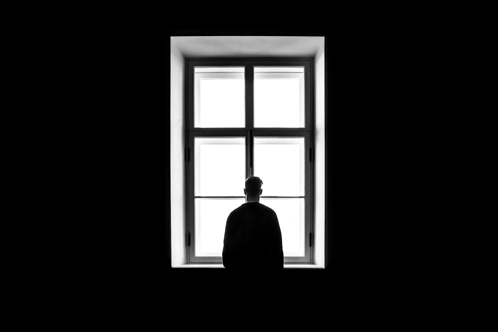

מה זה פוסט טראומה?
פוסט טראומה (PTSD) היא תגובה נפשית לאירוע טראומטי שהמוח והגוף ממשיכים לעבד זמן רב אחרי שהסכנה חלפה.
העמוד בנוי כשאלות ותשובות. אפשר לפתוח רק את מה שרלוונטי כרגע, ואין צורך לקרוא לפי הסדר.

שאלות ותשובות
אירוע טראומטי הוא אירוע מסכן חיים או אירוע המאיים באופן קיצוני על שלמות הגוף או הנפש. אירוע כזה מייצר תגובה נורמלית למצב לא נורמלי ומפעיל באופן טבעי ואוטומטי את מערכות ההישרדות של האדם שנאלץ לעבור בפתאומיות משגרה למצב חירום.
דוגמאות לאירועים טראומטיים: קרב, אירועי טרור, תאונות דרכים, תקיפות ופגיעות מיניות אלימות בתוך קשר זוגי, אסונות טבע.
מצב שבו קיימת אי-התאוששות מהתגובה לאירוע הטראומטי - האיום הפסיק להתקיים אך האדם עדיין מגיב כאילו הוא קיים. פוסט טראומה עלולה להתפתח אצל אדם שחווה את האירוע הטראומטי, וגם אצל אדם שהיה עד ראייה, או אדם שנחשף לפרטים הקשים אודות האירוע הטראומטי.
התגובה יכולה להיות רציפה, או להתעורר כשאדם נחשף לגירויים (טריגרים) שמזכירים את האירוע.
הביטויים יכולים להיות: קשיים בשינה וסיוטי לילה, רגזנות, התפרצויות, הימנעויות מאנשים וממקומות מסוימים, שינויים במצב הרוח, חרדה ועוד.
כן - רוב האנשים מתאוששים מאירועים טראומטיים באופן טבעי, בזמן. המוח שלנו מצויד ביכולת עיבוד הטראומה ו"תיוקה" כזיכרון עבר.
עם זאת, אצל חלק מהאנשים, עקב עוצמת האירוע, גורמים ביולוגיים, או היעדר תמיכה - תהליך זה נעצר. הזיכרון נשאר "חי" ומפעיל, כאילו האיום עדיין קיים.
זה לא אומר שמשהו שבור בך - זה אומר שהמוח שלך עדיין מנסה להגן עליך.
אדם שעבר אירוע טראומטי נאלץ לעבור בפתאומיות משגרה למצב חירום, ומגיב בפעולה לא מודעת וללא בחירה. כאשר המוח מזהה שאין יותר איום, הוא מסמן למערכת להחזיר את פעולות השגרה - וברוב המקרים המערכת לבד מייצרת התאוששות טבעית. במצב כזה האדם מאפשר לעצמו בהדרגה לעבד את החוויה שעבר, לחשוב ולדבר על מה שאירע, ולשוב ולתפקד במעגלי חייו השונים - קשרים בין-אישיים, עבודה ופעילויות משמעותיות.
ברוב המקרים נצפה להתאוששות טבעית אחרי כחודש וחצי - התסמינים יחלפו ונחזור לתפקוד תקין. אם לא חל שיפור, אפשר וכדאי לפנות לטיפול להמשך בירור.
ישנם מספר תחומים שבהם נראה תגובות אופייניות לאחר אירוע טראומטי:
- **חודרנות:** זיכרונות ו"פיסות זיכרון" הקשורים לאירוע הטראומטי פורצים לתודעה ומשתלטים על כל החוויה ברגע נתון. זה יכול לקרות בסיוטי לילה, בפלאשבקים, או בתגובות לתמונות, צלילים, ריחות או מילים המזכירים את האירוע.
- **הימנעות מחוויה או מרגש:** האדם שנפגע נמנע ממקומות, חפצים, מצבים ואנשים המזכירים לו את האירוע, ובנוסף מצמצם מחשבות, דיבור, רגשות ותחושות שמתחברות לטראומה.
- **שינויים קוגניטיביים ורגשיים:** האדם הנפגע רואה את עצמו, את זולתו ואת העולם בכלל באור שלילי - חושב על עצמו שהוא חלש, נכשל או פגום. אחרים נראים לו תוקפניים ומתביישים בו, והעולם נתפס כשרירותי, מנוכר או רודפני.
- **עוררות יתר:** "כוננות ספיגה" תמידית - תחושה שחייבים להיות על המשמר וערוכים לפעולה בכל רגע. מצב זה מפריע כמובן לקשרים, לשינה ולריכוז.
בעת חשיפה לאירוע טראומטי המוח מזהה סכנה ומפעיל את "מנגנון ההישרדות", שתפקידו להבטיח תגובה ברגעי סכנה. בדרך כלל הפעולה ההישרדותית תהיה "הילחם" או "ברח". כדי שנוכל לפעול במהירות באחת מהדרכים האלה, הגוף זקוק לאנרגיה פיזית - ולכן תהיה הצפה של הורמונים, הזרמת דם וחמצן לשרירים, דופק מואץ, הזעה ועוד.
לתגובה זו ערך הישרדותי, אך לעיתים מנגנון ההישרדות עלול "להיתקע" גם זמן רב לאחר שהאירוע הסתיים. המוח מתקשה להבדיל בין סכנת חיים ממשית לבין מצוקה פסיכולוגית, ולכן טריגרים כמו ריח, רעש או אור חזק יכולים להפעיל את מערכות הגוף בעוצמה זהה - גם במצבים שאינם דורשים תגובה פיזית.
PTSD יכול להיגרם ממגוון אירועים: מלחמה, פיגועים, תאונות, תקיפה מינית, אלימות, מחלה קשה, ועוד.
לא כל מי שחווה טראומה יפתח PTSD. גורמי סיכון כוללים: עוצמת האירוע, היסטוריה של טראומה קודמת, חוסר תמיכה חברתית, גנטיקה, ועוד.
אם מנגנוני ההישרדות ממשיכים לפעול מחוץ להקשרם - כלומר, הגוף מגיב כאילו יש סכנה כשאין - זה יכול להיות סימן ל-PTSD.
דוגמאות: בהלה קיצונית מרעש, הימנעות ממקומות מסוימים, קשיי שינה, פלאשבקים, תחושת ניתוק מהמציאות.
[מעבר לשאלון הסקירה שלנו](/questionnaire)
השאלון שלנו יכול לתת אינדיקציה ראשונית - אבל אבחנה מדויקת מחייבת איש מקצוע.
לא כל אדם שחווה אירוע טראומטי יפתח פוסט טראומה. מחקרים מדברים על אחוזים לא גדולים של הפרעה פוסט טראומתית בעקבות אירוע, למעט במצבים של פגיעה באמון הבסיסי בעולם - פגיעות מיניות ופגיעות בילדים - שם הטראומה משאירה חותם עמוק.
[דף הרגעה אינטראקטיבי עם תרגילים מודרכים](/calming)
חרדה היא תופעה מרכזית בפוסט-טראומה. היא מלווה בתסמינים פיזיים כמו דפיקות לב מואצות, הזעה, קוצר נשימה, סחרחורות ורעד ועוד - ותסמינים אלה מזינים זה את זה.
למרות שהתקף חרדה מרגיש כמו סכנת חיים, הוא חולף מעצמו ואינו מסוכן. כמה דברים שעוזרים:
- **האטו את הנשימה:** שאפו 4 שניות, עצרו 4, נשפו לאט 6 שניות. זה מכבה את תגובת החירום של הגוף.
- **קרקוע:** שימו לב ל-5 דברים שאתם רואים, ו-4 שאתם נוגעים בהם - זה מחזיר אתכם להווה.
- **חיוך מאולץ:** כווצו את שרירי הפנים לחיוך רחב, גם אם הוא מרגיש מזויף לחלוטין. פעולה זו משחררת אנדורפינים במוח ומפחיתה את רמת המתח הפיזי.
- **הרפיית שרירים פרוגרסיבית (PMR):** כווצו את שרירי כפות הרגליים למשך 5 שניות, ואז שחררו אותם בבת אחת. עברו בהדרגה לכל קבוצות השרירים בגוף (שוקיים, ירכיים, בטן, ידיים, פנים) - ההרפיה הפיזית מאותתת למוח להירגע.
חשוב לזכור שברוב המקרים מתאוששים גם אחרי חוויות קשות ומציפות - היכולת האנושית לקום אחרי מכה מפתיעה לטובה. הדבר הרצוי אחרי חוויה טראומטית הוא לקחת זמן ולהיעזר בתמיכה הקיימת בסביבה או בקהילה.
ההפרעה הפוסט-טראומתית היא הפרעה של אי-התאוששות. כל התגובות המיידיות אחרי אירוע מטלטל הן נורמליות - בלבול, חוסר שינה, כעסים, "טחינה בראש" של מה שקרה, ניתוקים, כאבים ומיחושים לא מוסברים - הכול טבעי בימים הקרובים אחרי אירוע. מומלץ לפנות להערכה אצל גורם מקצועי אם אין מגמת שיפור כעבור 3-4 שבועות.
בטיפול בטראומה מנסים לעכל את מה שקרה - להפנים שזה אכן קרה, ושהאירוע הטראומטי קרה באופן מפחיד וללא שליטה. כעת, מתמודדים באופן פעיל עם הזיכרונות וההשלכות של האירוע. באופן פרדוקסלי, ברגע שניתן לקבל שהאירוע קרה - ניתן גם להפנים שהאירוע נגמר.
ישנן שיטות טיפול רבות, ומשותף לכולן שהן שואפות לעשות סדר בכאוס - ליצור ולמצוא רצף ומשמעות באירועים, ולמצוא להם מקום בטוח בסיפור חייו ובזהותו האישית של האדם.
מה אפשר לעשות עכשיו
ער"ן, עזרה ראשונה נפשית, זמין בכל שעה. במצב חירום רפואי: מד"א 101.